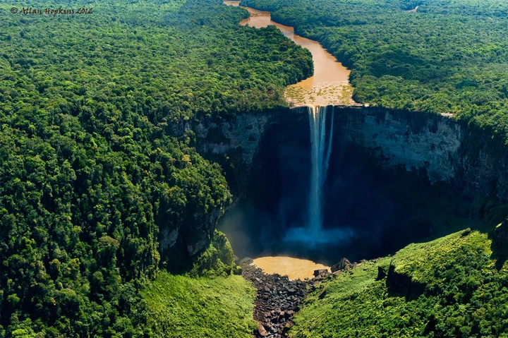
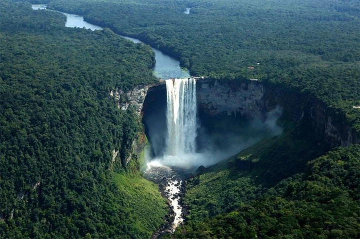
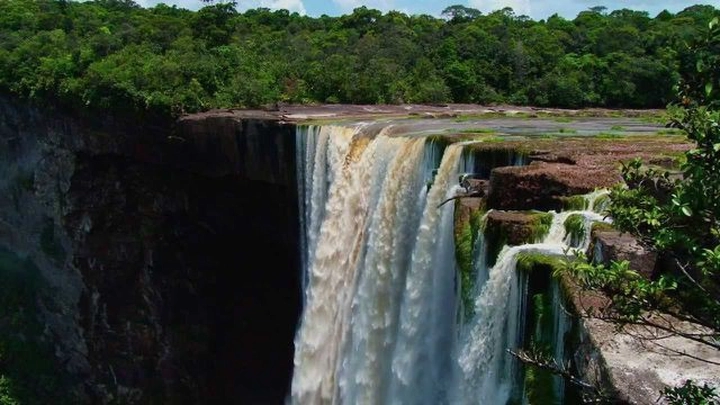
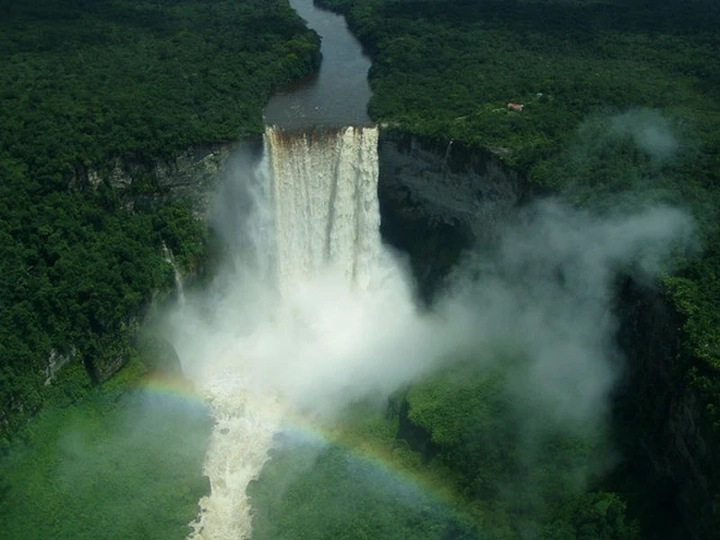

Khám phá Thác Kaieteur – Kỳ quan ẩn mình giữa rừng mưa Guyana
Giữa lòng rừng mưa Nam Mỹ – nơi thiên nhiên vẫn giữ trọn nét hoang sơ nguyên thủy – có một thác nước hùng vĩ mang tên Kaieteur (Kai-ơ-tơ), được mệnh danh là “kỳ quan ẩn mình” của thế giới. Nằm sâu trong Công viên Quốc gia Kaieteur thuộc Guyana, thác cao hơn 226 mét, gấp bốn lần thác Niagara trứ danh, nhưng lại ít người đặt chân đến.
Không có dòng người tấp nập, không có nhà hàng hay lối mòn thương mại – Kaieteur vẫn tồn tại như một minh chứng sống động cho sức mạnh thuần khiết của tự nhiên. Đến đây, con người không chỉ ngắm nhìn một thác nước, mà còn như được chạm vào nhịp thở của Trái đất.
1. Giới thiệu tổng quan về Thác Kaieteur
Ẩn mình giữa vùng rừng mưa rậm rạp và hoang sơ của Công viên Quốc gia Kaieteur, thuộc trung tâm cao nguyên Guyana, thác Kaieteur được ví như viên ngọc ẩn giữa đại ngàn Nam Mỹ. Dòng sông Potaro đổ xuống từ vách đá dựng đứng cao 226 mét, tương đương một tòa nhà hơn 70 tầng, với chiều rộng khoảng 113 mét, tạo thành một màn nước khổng lồ tuôn trào trắng xóa giữa nền xanh bạt ngàn của rừng nhiệt đới.
Mỗi giây, hàng trăm mét khối nước ào ạt đổ xuống, tạo nên tiếng gầm vang vọng xuyên qua thung lũng, hòa cùng tiếng chim rừng và tiếng gió, khiến người ta có cảm giác như đang đứng trước một sức mạnh siêu nhiên của Trái đất. Đây không chỉ là thác nước đơn dòng cao nhất thế giới, mà còn là một trong những dòng thác có lưu lượng lớn nhất hành tinh – biểu tượng hoàn hảo cho sự hùng vĩ nguyên thủy của thiên nhiên Nam Mỹ.

Bao quanh thác là thảm rừng rậm rạp, gần như chưa từng bị con người khai phá, với tầng tầng lớp lớp cây cổ thụ, lan rừng và muôn loài sinh vật đặc hữu sinh sống. Đứng trên vách đá Kaieteur, du khách có thể cảm nhận từng làn sương mờ phả lên mặt, nghe tiếng nước rơi xen lẫn tiếng tim đập trong lồng ngực – một trải nghiệm vừa choáng ngợp, vừa đầy tôn kính trước sức mạnh của thiên nhiên.
Đối với người dân Guyana, Kaieteur không chỉ là một thắng cảnh du lịch, mà còn là biểu tượng quốc gia, là linh hồn của đất nước – nơi kết tinh giữa sức mạnh thiên nhiên, lịch sử, và tâm linh bản địa. Chính nhờ sự hùng vĩ, hoang dã và ít bị tác động bởi con người, thác Kaieteur ngày nay vẫn được coi là một trong những kỳ quan thiên nhiên nguyên sơ nhất thế giới, nơi thời gian dường như đã dừng lại giữa tiếng thác đổ miên man.
2. Hành trình đến Thác Kaieteur – nơi ít dấu chân người
Để đặt chân đến thác Kaieteur, du khách phải thực sự là người yêu thiên nhiên và sẵn sàng cho một hành trình đầy thử thách. Từ thủ đô Georgetown – thành phố duy nhất ven biển của Guyana – bạn có thể lựa chọn hai con đường: một là bay bằng máy bay cánh quạt nhỏ mất khoảng một giờ đồng hồ, hai là đi thuyền ngược dòng Potaro rồi băng qua rừng mưa Amazon kéo dài nhiều ngày. Cả hai cách đều đưa bạn đến với một trong những vùng đất hoang sơ nhất hành tinh, nơi không có đường nhựa, không sóng điện thoại và không cả internet – chỉ còn lại âm thanh của tự nhiên.
Trên chuyến bay, máy bay nhỏ lao qua tầng mây dày, băng qua những ngọn núi phủ sương trắng và rừng rậm xanh thẫm bất tận. Khi phi công hạ độ cao, bức màn mây dần mở ra, và giữa biển cây rừng ấy, thác Kaieteur hiện lên như một dải lụa trắng khổng lồ tuôn từ trời xuống đất. Khoảnh khắc đó, mọi mệt mỏi, mọi nỗi sợ đều tan biến, chỉ còn lại cảm giác choáng ngợp và biết ơn vì được chứng kiến vẻ đẹp nguyên thủy hiếm hoi này.
Chính sự cách biệt địa lý khiến Kaieteur vẫn giữ được sự tinh khiết. Nơi đây hầu như không có khách du lịch đại trà, không hàng quán, không khách sạn – chỉ có trạm nghiên cứu sinh thái nhỏ, nơi một vài kiểm lâm và hướng dẫn viên sinh sống. Kaieteur, theo đúng nghĩa đen, là “vùng đất ít dấu chân người” – nơi thiên nhiên vẫn làm chủ, và con người chỉ là kẻ ghé thăm khiêm nhường.
3. Quy mô và độ cao ấn tượng
Thác Kaieteur được mệnh danh là thác đơn dòng cao nhất thế giới, và con số 226 mét chỉ là phần nổi của sự vĩ đại. Không giống như những thác nhiều tầng như Iguazu hay Victoria, Kaieteur đổ thẳng một dòng duy nhất từ vách đá dựng đứng xuống vực sâu, tạo ra sức rơi tự do khổng lồ với năng lượng đủ để làm rung chuyển mặt đất quanh đó.
Mỗi giọt nước rơi từ đỉnh thác mất hơn 4 giây để chạm mặt đất – khoảng thời gian đủ dài để người ta cảm nhận được sức nặng của trọng lực và sự dữ dội của dòng chảy. Dưới chân thác, nước va vào khối đá cổ xưa tạo thành làn sương mù dày đặc, khiến toàn bộ khu vực như chìm trong một bức màn huyền ảo. Khi ánh nắng lọt qua, những dải cầu vồng lung linh hiện lên, phản chiếu trên màn nước trắng xóa – một cảnh tượng kỳ diệu khiến Kaieteur luôn nằm trong danh sách những thác nước đẹp nhất hành tinh.

Với lưu lượng trung bình 663 m³/s, Kaieteur vượt xa nhiều thác nước nổi tiếng khác về sức mạnh dòng chảy. Sự kết hợp giữa chiều cao, độ rộng và áp lực nước khổng lồ khiến nó vừa hùng vĩ vừa dữ dội, một “bức tường nước sống” mà không bức ảnh hay video nào có thể tái hiện trọn vẹn. Người dân Guyana thường nói rằng: “Kaieteur không chỉ là thác nước – nó là linh hồn của đất mẹ đang gầm vang.”
4. Câu chuyện hình thành – Dấu ấn địa chất hàng triệu năm
Vùng đất Kaieteur là một phần của khối núi Guiana Shield – một trong những nền địa chất cổ xưa nhất hành tinh, có tuổi đời hơn 2 tỷ năm. Trong suốt quá trình dài dằng dặc ấy, sông Potaro đã không ngừng bào mòn lớp đá sa thạch Potaro, khoét sâu vào lòng cao nguyên và dần dần tạo nên thung lũng hùng vĩ ngày nay.
Theo các nhà địa chất, quá trình hình thành thác Kaieteur là kết quả của sự kết hợp giữa kiến tạo địa chất và xói mòn tự nhiên. Ban đầu, sông Potaro chảy qua một vùng đất bằng phẳng. Qua hàng triệu năm, dòng chảy mạnh mẽ dần mài mòn lớp đá mềm bên dưới, khiến lớp đá cứng bên trên sụp xuống từng phần, tạo nên vách đá dựng đứng đặc trưng của Kaieteur. Mỗi cú sụp như vậy lại làm thác lùi dần về phía thượng nguồn, mở rộng dần thung lũng và tăng thêm độ cao cho thác.
Điều thú vị là thác Kaieteur vẫn đang tiếp tục thay đổi mỗi năm. Dòng nước vẫn bào mòn nền đá, khiến ranh giới giữa thác và sông Potaro ngày càng tiến sâu vào lòng cao nguyên. Mỗi tiếng thác đổ ngày nay chính là tiếng vọng của hàng tỷ năm tiến hóa địa chất, là minh chứng sống cho sức mạnh bền bỉ của tự nhiên.
Người bản địa Patamona tin rằng thác được hình thành từ truyền thuyết Kai – người tù trưởng già hy sinh thân mình để cứu dân làng, và dòng thác chính là hóa thân của ông. Dù là khoa học hay huyền thoại, Kaieteur vẫn mãi là nơi giao hòa giữa thiên nhiên, lịch sử và linh hồn con người Guyana.
5. Huyền thoại bản địa – Truyền thuyết người Patamona
Theo truyền thuyết linh thiêng của người Patamona – tộc người sinh sống lâu đời ở vùng cao nguyên Guyana – cái tên Kaieteur bắt nguồn từ câu chuyện cảm động về tù trưởng Kai, một người anh hùng được cả bộ tộc kính trọng. Khi dân làng đối mặt với một đợt hạn hán nghiêm trọng khiến cây cối khô héo, sông suối cạn kiệt và cuộc sống bên bờ diệt vong, Kai đã quyết định hiến dâng chính mạng sống của mình cho Makonaima, vị thần tối cao của nước, để cầu xin mưa trở lại.
Tương truyền, ông đã lặng lẽ chèo con thuyền gỗ ra giữa dòng sông Potaro cuộn xiết, đọc lời khấn nguyện cuối cùng rồi lao xuống vực sâu. Ngay sau đó, những đám mây đen kéo đến, mưa đổ xuống xối xả, hồi sinh cả vùng đất khô cằn. Người dân tin rằng linh hồn của Kai vẫn hiện diện trong làn nước trắng xóa, và tiếng thác đổ ngày đêm là lời hát vĩnh hằng của người tù trưởng dũng cảm. Từ đó, thác mang tên Kaieteur – có nghĩa là “thác của Kai” – biểu tượng cho sự hy sinh, lòng quả cảm và mối giao hòa thiêng liêng giữa con người và thiên nhiên.
Ngày nay, khách du lịch khi đến đây vẫn có thể cảm nhận được không khí linh thiêng ấy. Người bản địa thường làm lễ nhỏ trước khi bước vào khu vực gần thác – như một lời tri ân với tù trưởng Kai, đồng thời thể hiện niềm tôn kính đối với linh hồn của rừng núi đã ban tặng cho họ sự sống.
6. Hệ sinh thái phong phú quanh thác
Bao quanh thác Kaieteur là Công viên Quốc gia Kaieteur, rộng hơn 600 km², được xem là một trong những khu rừng nguyên sinh hoang sơ và đa dạng sinh học nhất Nam Mỹ. Đây là nơi giao thoa giữa rừng mưa nhiệt đới và cao nguyên đá cổ, tạo điều kiện lý tưởng cho hàng trăm loài động – thực vật sinh sôi, trong đó có nhiều loài đặc hữu mà không nơi nào khác trên thế giới có được.
Nổi bật nhất là ếch vàng (Golden Frog) – sinh vật nhỏ bé chỉ dài khoảng 2 cm, sống ẩn mình trong lòng hoa bromeliad, nơi những giọt sương rừng tụ lại thành hồ nước tí hon. Loài ếch này là biểu tượng của sự tinh khiết và bền vững của hệ sinh thái Kaieteur. Bên cạnh đó là chim Cock-of-the-Rock, loài chim sở hữu bộ lông đỏ cam rực rỡ đến chói lòa, thường xuất hiện vào buổi sáng sớm hoặc chiều muộn khi ánh nắng phản chiếu khiến khu rừng bừng sáng như rực lửa.

Ngoài ra, khu vực này còn là nơi trú ngụ của báo đen, khỉ nhện, chim đại bàng Harpy, cùng vô số loài bướm, lan rừng, dương xỉ cổ đại và nấm lạ có hình dạng kỳ thú. Các nhà sinh vật học ví Kaieteur như một “kho báu tiến hóa”, nơi thời gian dường như ngừng trôi, và sự sống vẫn vận hành theo quy luật nguyên sơ của hàng triệu năm trước. Mỗi chuyến đi bộ xuyên rừng ở đây đều là hành trình khám phá đầy bất ngờ – nơi từng bước chân có thể chạm vào một điều kỳ diệu của tự nhiên.
7. Thời điểm lý tưởng để tham quan
Thác Kaieteur có thể được ghé thăm quanh năm, nhưng mỗi mùa lại mang đến một trải nghiệm khác biệt, như thể thiên nhiên thay áo mới để kể một câu chuyện khác nhau.
Từ tháng 3 đến tháng 6, khi mùa khô đến, thời tiết trong trẻo, mây ít và ánh sáng mạnh, giúp du khách dễ dàng chiêm ngưỡng toàn cảnh thác từ trên cao. Đây là thời điểm lý tưởng nhất cho những nhiếp ảnh gia chuyên nghiệp – khi mặt trời chiếu qua lớp sương mỏng, tạo nên cầu vồng nước tuyệt đẹp vắt ngang thung lũng Potaro.
Ngược lại, mùa mưa từ tháng 7 đến tháng 11 lại mang đến vẻ đẹp hùng vĩ nhất. Dòng nước dâng cao, tiếng thác đổ vang vọng như tiếng trống đất trời, hơi nước bốc lên mờ ảo khiến cảnh vật trở nên huyền bí. Nhiều người ví khung cảnh ấy như “cửa ngõ dẫn vào cõi linh thiêng” – nơi con người cảm thấy mình thật nhỏ bé trước sức mạnh của tự nhiên.
Dù bạn đến Kaieteur vào mùa nào, điều khiến nơi đây đặc biệt không chỉ là thác nước khổng lồ mà còn là cảm giác “nghe được hơi thở của Trái Đất” – tiếng gió rừng, tiếng chim hót, và tiếng nước hòa thành bản giao hưởng nguyên sơ. Kaieteur không chỉ là một điểm đến du lịch, mà là hành trình tìm về với thiên nhiên trong trạng thái thuần khiết nhất.
8. Kaieteur – Điểm đến của sự tĩnh lặng
Điều khiến Kaieteur trở nên đặc biệt không chỉ là vẻ hùng vĩ đến choáng ngợp của dòng thác, mà còn là cảm giác tách biệt hoàn toàn khỏi thế giới hiện đại. Nằm giữa rừng mưa nguyên sinh Guyana, cách xa mọi đô thị và phương tiện giao thông ồn ào, nơi đây không có tín hiệu điện thoại, không Wi-Fi, không nhà hàng hay khách sạn sang trọng. Thứ duy nhất bạn nghe được là tiếng gió rừng, tiếng nước rơi ào ạt và tiếng chim vọng lại từ xa – những âm thanh thuần khiết của Trái Đất khi chưa bị con người khuấy động.
Khi đứng trước bức tường nước khổng lồ đổ từ độ cao hơn 200 mét, người ta bỗng nhận ra sự nhỏ bé của mình trong vũ trụ rộng lớn. Mọi lo toan, ồn ào của đời sống dường như tan biến trong làn hơi nước mờ ảo. Kaieteur dạy ta một bài học giản dị nhưng sâu sắc – rằng tĩnh lặng không phải là sự vắng lặng, mà là khoảnh khắc ta lắng nghe được chính mình giữa thiên nhiên.

Không ít du khách nói rằng họ cảm thấy “được thanh lọc” khi đến đây – như thể gió rừng cuốn trôi đi mọi căng thẳng, còn tiếng thác đổ là lời nhắc rằng cuộc sống này vẫn còn điều kỳ diệu. Ở Kaieteur, bạn không chỉ ngắm cảnh, mà trải nghiệm một trạng thái tâm linh – nơi con người và thiên nhiên hòa vào nhau trong sự cân bằng tuyệt đối.
9. Giá trị bảo tồn và nguy cơ bị đe dọa
Mặc dù được xem là một biểu tượng quốc gia của Guyana và được bảo vệ trong khuôn khổ Công viên Quốc gia Kaieteur, khu vực này vẫn đang phải đối mặt với nhiều thách thức môi trường nghiêm trọng. Áp lực từ hoạt động khai thác khoáng sản, chặt phá rừng và nạn săn bắn trái phép đã làm thay đổi cấu trúc sinh thái vốn mong manh của vùng rừng mưa. Bên cạnh đó, biến đổi khí hậu toàn cầu khiến mưa thất thường và dòng nước Potaro có những biến động khó lường, đe dọa đến cân bằng tự nhiên của hệ sinh thái.
Nhận thấy tầm quan trọng của Kaieteur, chính phủ Guyana cùng các tổ chức bảo tồn quốc tế như WWF và Global Wildlife Conservation đã hợp tác trong nhiều dự án nghiên cứu và quản lý du lịch bền vững. Họ triển khai các chương trình giám sát môi trường, nâng cao nhận thức cộng đồng bản địa, đồng thời phát triển du lịch sinh thái có trách nhiệm – nơi mỗi du khách được khuyến khích tôn trọng và bảo vệ thiên nhiên.
Du khách đến Kaieteur ngày nay không chỉ là người ngắm cảnh, mà còn là người đồng hành trong hành trình bảo tồn. Mỗi bước chân nhẹ nhàng, mỗi bức ảnh chụp, mỗi hành động hạn chế rác thải đều góp phần gìn giữ kỳ quan này cho thế hệ mai sau. Bởi lẽ, nếu mất đi Kaieteur, thế giới sẽ không chỉ mất một thác nước – mà còn mất đi một phần ký ức nguyên sơ của Trái Đất.
10. “Kỳ quan ẩn mình” giữa rừng Nam Mỹ
Trong số những thác nước nổi tiếng của thế giới, Kaieteur có thể không được nhắc đến nhiều như Iguazu của Argentina – Brazil hay Niagara ở biên giới Mỹ – Canada, nhưng chính sự ẩn mình trong tĩnh lặng lại khiến nó trở nên đặc biệt hơn cả. Không ồn ào, không đông đúc, Kaieteur giống như một báu vật được thiên nhiên giấu kỹ giữa lòng rừng mưa, chỉ dành cho những ai đủ kiên nhẫn và trân trọng để tìm đến.
Đối với du khách, hành trình đến Kaieteur không chỉ là chuyến đi về mặt địa lý, mà còn là hành trình trở về với sự thuần khiết – nơi con người học cách quan sát, lắng nghe và cảm nhận. Ở đây, vẻ đẹp không cần tô vẽ; nó tự cất tiếng nói bằng hơi nước, bằng tiếng thác đổ, bằng mùi rừng ẩm sau cơn mưa.
Kaieteur là biểu tượng của sức mạnh và sự tĩnh lặng đồng thời, của cái đẹp không cần phô trương nhưng đủ khiến mọi tâm hồn rung động. Giữa thế giới ngày càng đô thị hóa và xa rời tự nhiên, thác Kaieteur nhắc chúng ta nhớ rằng: vẻ đẹp thật sự không nằm ở nơi đông người, mà ở chỗ thiên nhiên vẫn còn được quyền là chính nó.